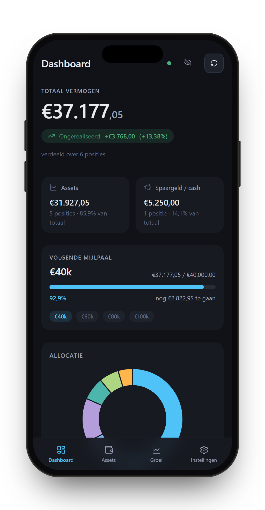
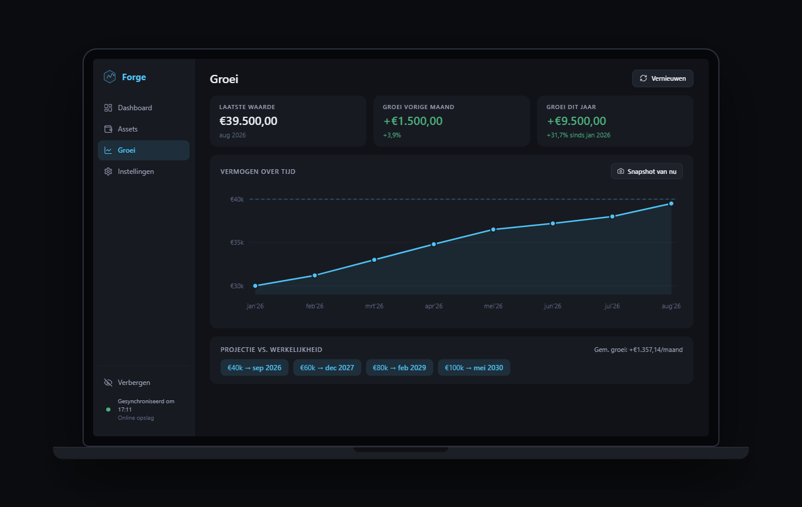
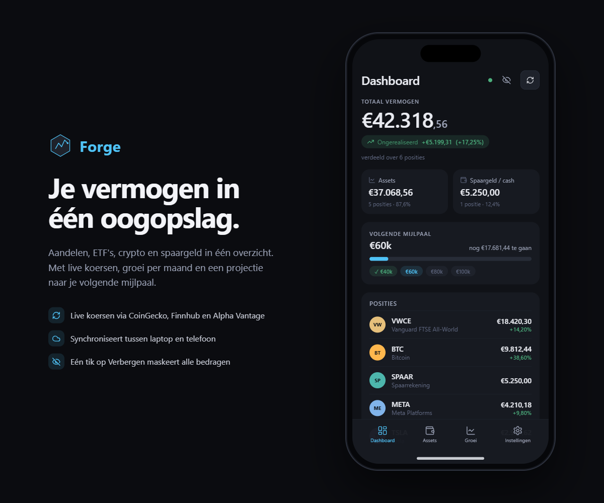
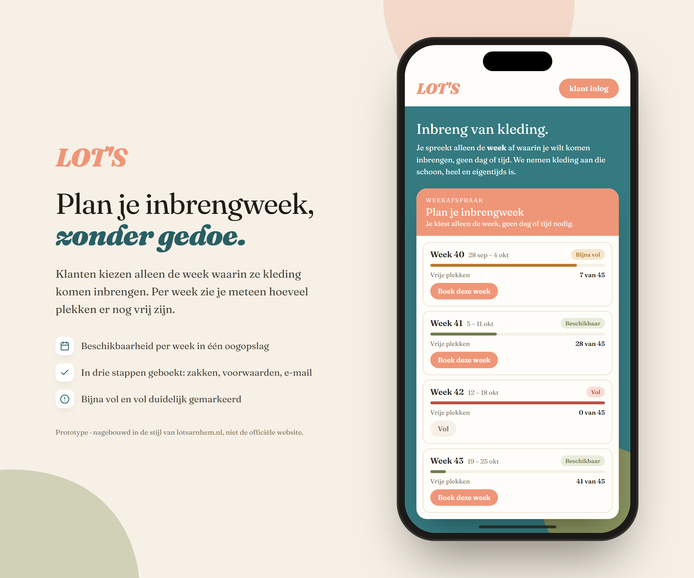

Sprint 2: Forge & de planner voor LOT's
Mijn portfolio tracker Forge omgebouwd tot een echte app voor mobiel en laptop, plus een digitale weekagenda voor tweedehandswinkel LOT's.
In het kort
Van losse webpagina naar een app die ik elke dag gebruik
Deze sprint draaide vooral om Forge, mijn eigen portfolio tracker. Ik had al een simpele versie waarin ik mijn ETF, aandelen en crypto bijhield, maar die werkte alleen op mijn laptop en zag er nog vrij basic uit. Samen met Claude Code heb ik er een volwaardige app van gemaakt: een nieuw, rustiger design met een zijbalk, live koersen, een groeigrafiek met een projectie naar mijn volgende mijlpaal, en een knop waarmee ik al mijn bedragen in één keer verberg als er iemand meekijkt.
Het leukste stuk: Forge draait nu als echte app op mijn telefoon. De code staat op GitHub en wordt via GitHub Pages online gezet, dus ik kan hem gewoon op mijn beginscherm zetten, met een eigen icoon. Met Supabase heb ik er een database met een login aan gekoppeld. Pas ik iets aan op mijn laptop, dan staat het een paar seconden later ook op mijn telefoon.
Daarnaast bouwde ik een werkend prototype voor LOT's: een weekagenda waarmee klanten zelf een week kiezen om kleding in te brengen, in plaats van te bellen. Daarover verderop meer.

Foto's




Hoe ik het heb aangepakt
Forge: bouwen, testen, gebruiken, verbeteren
Ik begon niet met "maak mijn app mooier", maar met een uitgebreide opdracht: wat er moest blijven werken, hoe het design moest voelen, welke nieuwe functies ik wilde en welke bugs ik al kende. Ik liet Claude eerst vragen stellen en een plan maken, en pas na mijn akkoord bouwen. Dat klinkt als extra werk, maar het voorkwam veel verkeerde aannames. Zo kwam bijvoorbeeld naar boven dat mijn data op mijn laptop en telefoon helemaal niet hetzelfde zou zijn zonder een online database.
Een echte app op mijn telefoon
Forge is één HTML-bestand, zonder server. GitHub Pages zet dat bestand gratis online, en met een manifest en app-iconen kun je de site op je beginscherm installeren. Hij opent dan zonder adresbalk, net als een gewone app. Voor de data gebruik ik Supabase: een database met een login, waarbij de beveiliging in de database zelf zit (Row Level Security). Alleen mijn account kan mijn gegevens lezen of wijzigen, ook al staat de publieke sleutel gewoon in de code op GitHub. Nieuwe aanmeldingen heb ik uitgezet, zodat het project echt alleen van mij is.
Verbeteren door het zelf te gebruiken
De beste verbeterpunten kwamen pas toen ik Forge dagelijks op mijn telefoon gebruikte. Ik wilde mijn posities zien zoals in Trading 212, met koers en winst of verlies in euro's, dus dat hebben we erin gezet. Ik wilde bijhouden of mijn verdeling tussen kern (mijn wereldwijde ETF) en satelliet (de risicovollere posities) nog op 80/20 staat, dus Forge rekent nu uit hoeveel ik moet bijkopen om weer op doel te komen. En het oude logo maakte plaats voor een hamer die op een aambeeld slaat, want "forge" komt van smeden.
Niet alles ging in één keer goed. Tijdens het testen bleek bijvoorbeeld dat de gratis koersdienst voor crypto je tijdelijk blokkeert als je te vaak ververst. De oplossing: Forge haalt nu hooguit eens per vijf minuten nieuwe koersen op en valt terug op de laatst bekende koers als het even niet lukt.
Wat ik heb geleerd
AI bouwt snel, maar ik stuur
Een goede opdracht is het halve werk. Hoe duidelijker ik beschreef wat ik wilde en waarom, hoe beter het resultaat. Door AI eerst vragen te laten stellen, kwam ik zelf ook scherper te staan wat ik eigenlijk wilde.
Ik snap nu hoe een web-app met een backend in elkaar zit. Het verschil tussen een publieke en een geheime sleutel, waarom beveiliging in de database hoort te zitten en niet in de pagina, en hoe twee apparaten dezelfde data kunnen delen. Ik heb me bewust laten uitleggen hoe de code werkt, bijvoorbeeld de berekening achter het 80/20-advies, zodat ik niet alleen een werkende app heb, maar ook begrijp waarom hij werkt.
De laatste tien procent kost de meeste aandacht. Een app die in de browser werkt, is nog geen app die fijn werkt op je telefoon. Denk aan inzoomen dat je niet wilt, een icoon dat je telefoon onthoudt, of een externe dienst die ineens blokkeert. Die dingen vind je alleen door het echt te gebruiken en kritisch te blijven.
De planner voor LOT's
Van telefoontje naar zelfbediening
LOT's Arnhem werkt met weekafspraken: klanten spreken geen dag of tijd af, maar een hele week waarin ze kleding komen inbrengen. Op dit moment kan dat alleen telefonisch of in de winkel — de website toont enkel of inbreng "open" is via een gekleurde vorm. Ik onderzocht hoe dat proces er digitaal uit zou kunnen zien en bouwde een werkend prototype: een boekingswidget waarin een klant in drie stappen een week kiest (aantal zakken, een voorwaarden-check op schoon/seizoensgebonden/niet ouder dan 2 seizoenen, en een e-mailbevestiging), met een gedeelde, live database zodat bezetting per week direct klopt voor iedereen die de pagina open heeft. De uiteindelijke versie is opgebouwd in de echte huisstijl van LOT's — typografie, kleuren en vormtaal nagebouwd op basis van de bestaande website.
Leeruitkomsten
Wat deze sprint aantoont
LU2 · Praktijkoplossing. Forge is geen oefenproject maar een app die ik elke dag gebruik om mijn beleggingen bij te houden, op laptop én telefoon. De planner voor LOT's lost een echt probleem op voor een bestaande winkel: afspraken maken zonder te hoeven bellen.
LU4 · AI-tools. Ik heb Claude Code ingezet om te ontwerpen, te bouwen, te testen en code uit te leggen, en ik heb het gecombineerd met GitHub en Supabase. Daarbij stuurde ik zelf: eerst vragen en een plan, dan bouwen, en elke stap controleren.
LU5 · Zelfsturend werken. Ik heb zelf bepaald wat Forge moest kunnen, op basis van hoe ik de app echt gebruik. Ik heb zelf keuzes gemaakt in design en techniek, en ben blijven verbeteren tot het werkte zoals ik wilde.
Bekijk ook